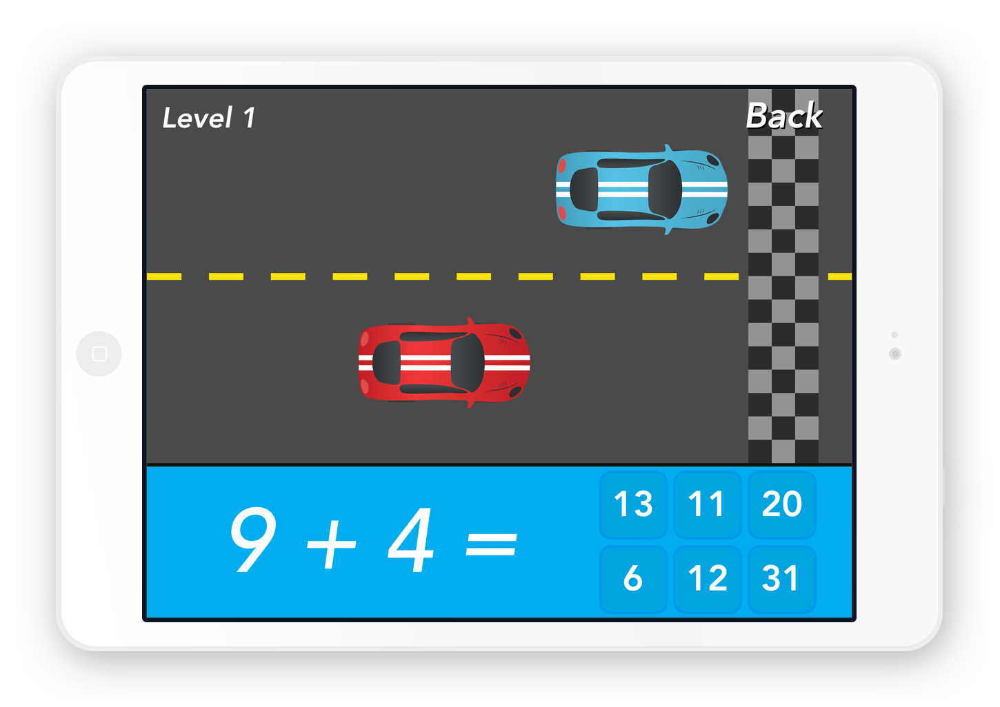

Math Racer
I created this iOS app to help elementary students improve their basic
math skills. I wanted to make a game where students would test their
math skills, come back, practice, and improve. In the app, students
choose a mathematical operation and difficulty level, then answer math
problems to race their car against the opponent driver.
